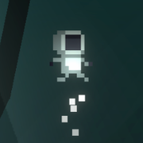

Synopsist
My music website, where my songs stream for free in a custom web player. Each song is analyzed with Essentia (audio embeddings, tempo, key, and where the chorus hits), and the visuals in full screen follow that analysis.
Open Synopsist
Oslo HaggadoneMy music website, where my songs stream for free in a custom web player. Each song is analyzed with Essentia (audio embeddings, tempo, key, and where the chorus hits), and the visuals in full screen follow that analysis.
Open Synopsist